
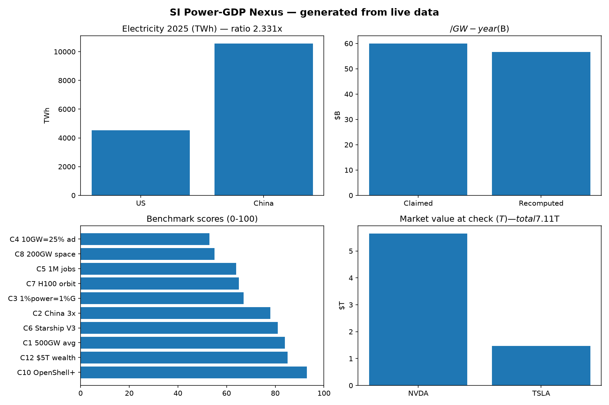
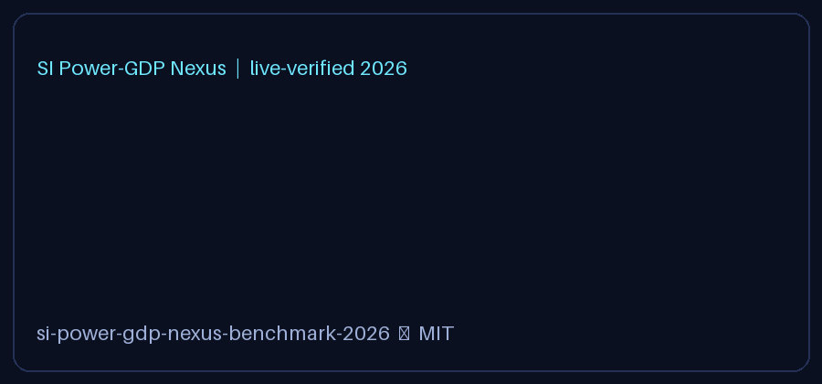

A beautiful, beginner-friendly, fully reproducible check of the “win superintelligence with energy + chips + safety + towns + space” plan — tested against real electricity, GDP, launch, safety-code, and market numbers.
Power math is real, wealth is real, orbital dreams are early, jobs need honest counting.
Bottom line: build power + chips + safety + towns. Count construction jobs separately from permanent jobs. Treat space solar as R&D, not 2027 grid relief. Use safety tooling that is already open-source today.
Words in plain English: Gigawatt (GW) = a billion watts, power at one moment. Terawatt-hour (TWh) = energy over a year. Divide TWh by 8760 hours to get average GW. SI factory = data center that produces valuable work, not just stores files. Containment = what the agent is allowed to touch. Monitoring = watching it continuously with a separate chip.
After this section you know more than most interview candidates: you can explain GW vs TWh, why $/GW is accounting not proof, why construction jobs ≠ permanent jobs, and why space solar wins physics but loses logistics today.

Screenshot will appear at assets/preview.png after you run: python tools/make_charts.py + python tools/capture.py. This page still fully works without it.'"/>Captured automatically (see tools/capture.py). Stored in-repo so README works offline.

Run python tools/make_charts.py to generate assets/charts.png'"/>Every bar = a live number in data/processed/*.json.
No external upload needed. The demo lives in this repo and plays directly on GitHub + Pages:
assets/demo.gif — autoplays inline, no click needed.assets/preview.png — full-page screenshot of this site.assets/charts.png — charts generated from live numbers. 

How to re-record yours: run the quickstart, record 60–90 s (terminal + this page), keep GIF < 8 MB, 15 fps, 900 px wide. See docs/RECORDING.md.
Each claim: verbatim text, verdict, evidence, score 0–100 (evidence 40 + live 30 + falsifiability 15 + novelty 15). Strongest: open safety tooling (93). Weakest: launch-rate (53–55).
E1 power→GDP, E2 China gap, E3 compute-per-watt, E4 jobs, E5 orbital Fermi, E6 safety repro, E7 market wealth. Sequential fetches, URL+time logged, cached fallback so offline still passes.
docker compose up --build research runs tests + benchmark. Notebook + paper services included. No keys, no secrets.
GitHub Pages-ready docs/preview.html. Enable Pages → share link → anyone reads results without installing anything.
Generated PNGs in assets/, full-page screenshot, and in-repo GIF demo that plays directly on GitHub + Pages.
paper/PAPER.md + PhD-ready README: abstract, methods, results, 4 hidden patterns, limits, refs.
| Persona | Goal | Path (5 min) |
|---|---|---|
| Student — first research repo | Understand GW, GDP, jobs without jargon | Read 🌱 Beginner → run 1 command → change one number → see charts update |
| Job candidate — interview prep | Sound expert on AI energy debate | Memorize CEO 4 numbers + 1 caveat each; quote ratepayer wedge + Fermi |
| Policy analyst — town negotiation | Separate construction vs permanent jobs | Use E4 four-metric table: jobs-build, jobs-operate, $tax, ¢-penalty |
| Engineer — agent safety | Ship contained agents | Follow E6: sandbox + policy + separate-chip monitor; measure time-to-prod |
| Founder / investor — space vs ground | Avoid hype trap | Use E5 Fermi: flights/yr needed vs demonstrated; price carbon |
| Researcher — PhD extension | Find novel gap | Pick H1–H4; each has falsifier + dataset + 12-mo plan |
| Maintainer — showcase repo | Best-MIT-repo polish | Enable Pages (below), upload demo, attach JSON as release assets |
| Claim | Live check | Verdict |
|---|---|---|
| US avg ≈500 GW | 4536 TWh ÷ 8760 = 517.8 GW | CONFIRMED |
| China ≈3× US | 10573 ÷ 4536 = 2.33× (28.7% high) | PARTIALLY HIGH |
| 5 GW = $300B → $60B/GW | 5.18 GW = $293B → $56.6B/GW | MATH ✓ CAUSE ✗ |
| 10 GW = 25% of additions | Implies 40 GW/yr additions (optimistic) | NEEDS QUEUE |
| 10–20 GW/yr → 1M jobs | Build flow ✓, operate 6–16k; +3.1% rate penalty | MIXED |
| Starship orbital + 26× V3 | Flight 14 Sep 28 2026 | CONFIRMED |
| H100 in orbit + TPU | Demo, not cloud | DIRECTIONAL |
| 200 GW/yr space solar | Needs ~2000 flights/yr; weekly = 52 | RATE FAILS |
| Safety: containment + chip monitor | Open-source runtime + DPU watchdog live | CONFIRMED |
| $5T combined wealth | $7.11T (NVDA $5.65T + TSLA $1.46T) | CONSERVATIVE ✓ |
| Clean funded without subsidy | Tax credits + loans remain material | OVERSTATED |
Sources: national electricity review 2026, world development indicators, live market prices, launch provider updates, safety platform release + code repo, contemporaneous business press, peer-reviewed orbital-carbon and labor-rate studies. Full refs in README + paper.
2.33×, not 3×. Direction right, scalar high.
Safety + power math strongest; orbital rate weakest.
$56.6B recomputed vs $60B claimed. Accounting reproduces; causality needs panel study.
2025: fossil fell in both China (−56) and India (−52 TWh) — first joint fall this century — while solar met 75% of demand growth. The power race starts after the peak, not during a boom.
Counties with data centers pay +3.1% more residential. Prosperity = tax + construction; penalty = bills + water. Always report 4 numbers together.
“Clean space solar” flips to up to 10× carbon once launch + reentry counted. Advantage = capacity factor + learning, not carbon.
Over-cautious assistants refuse defender-like actions (the “knife” problem). Measure refusal-as-cost on dual-use tasks.
git clone <your-fork-url> si-power-gdp-nexus-benchmark-2026 cd si-power-gdp-nexus-benchmark-2026 pip install -r requirements.txt python experiments/run_all.py pytest -q && python benchmarks/benchmark_suite.py # Docker alternative: docker compose up --build research
Outputs land in data/processed/*.json. No keys. If network flaps, cached snapshots keep tests green and errors are saved, not hidden.
main, folder: /docs. Save.https://<you>.github.io/<repo>/preview.html (this file) — share that link in README.Why /docs? GitHub Pages publishes a folder; keeping the site in /docs leaves root clean for code. .nojekyll disables Jekyll so plain HTML + assets serve exactly as written.
README.md paper/PAPER.md CITATION.cff LICENSE (MIT) docker-compose.yml Dockerfile requirements.txt Makefile src/si_nexus/ claims.py live_data.py experiments/ e1..e7 + run_all.py benchmarks/benchmark_suite.py tests/test_claims.py data/processed/*.json (live snapshots) docs/preview.html (this page) docs/RECORDING.md docs/index.html assets/preview.png assets/charts.png assets/demo.gif tools/make_charts.py tools/capture.py
python experiments/e1_power_gdp.pypython tools/make_charts.pypython tools/capture.py (headless browser → assets/preview.png)src/si_nexus/claims.py + test in tests/ + score in benchmarks/.data/processed/*.json, paste Pages URL at README top.MIT — see LICENSE. If you use the numbers, cite this repo + the primary statistics (electricity review, development indicators, market prices, launch/safety releases).
@software{si_nexus_2026,
title={From Gigawatts to GDP: live-verified benchmark},
version={1.0.0}, date={2026-10-05}, license={MIT}}